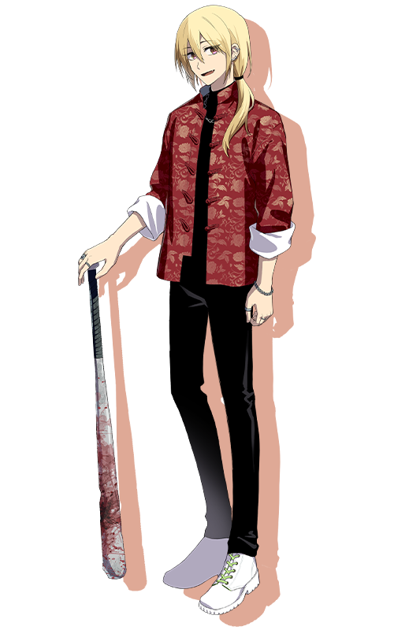

『出られない部屋』
「いうてオレさ～、今までマジのヤバいラインは越えたことないじゃん？」
「こう……好き！って思うと……なる……」
種別：救世主 脅威度：4 能力値：猟奇4・才覚2
性別：男 年齢：24 身長：180cm 誕生日：6月3日
現代日本の、まあまあ裕福な家庭の生まれの不良大学生。
物心ついた頃から、食人願望を抱える。
やがて、その欲望の強さが自身が対象に抱く愛情の深さと比例すること、
何かに興じている間はそこから目を逸らせることに気がつき、
家族や友人からは距離を置いて、悪い遊びに耽るようになる。
堕落の国でもその浪費癖は遺憾なく発揮されていた。
武器はバット。
趣味は面白いことならなんでも。
好き：椿、浩紀さん、肉、刺激的な物事
苦手：我慢、他人の血
back